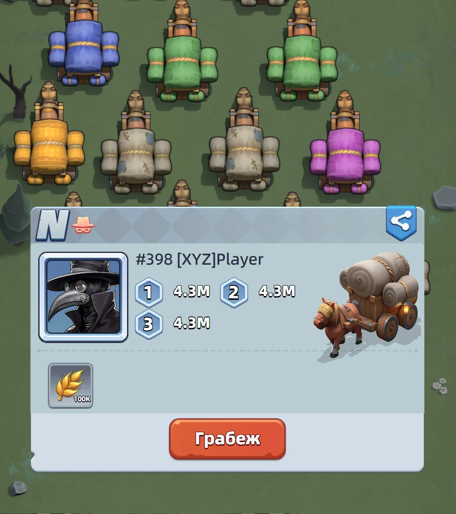
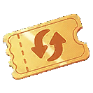
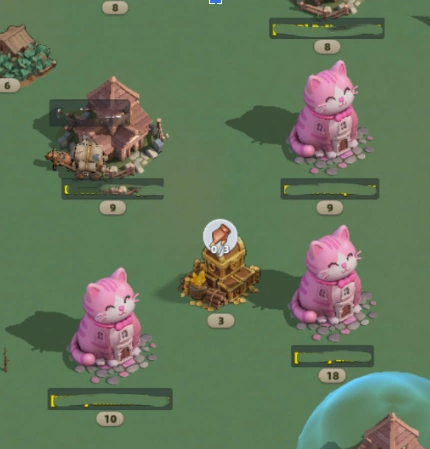
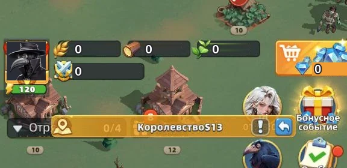

Правила сервера 397
Правила сервера 397Своих не грабим. Грабим только чужие серверы
Караваны и секретные операции игроков нашего сервера 397 не трогаем. Грабить можно только игроков с других серверов. Ниже показано, где поставить галочку и как попасть на чужой сервер.

Караваны 397 — нельзя
Галочка «Запретить караваны на этом сервере» стоит всегда.
Секретные операции 397 — нельзя
Грабим только, когда находимся на карте чужого сервера.

4 грабежа в день
Счётчик «Грабежей сегодня: 0/4» — вверху окна караванов.

В КвК — сервер врага
Каждый их ограбленный караван = +120 очков нашему серверу.
Правила нашего сервера
1. Караваны своего сервера не грабим
Ни чужой альянс, ни одиночек — никого с сервера 397. В окне караванов всегда стоит галочка, которая их прячет.
2. Секретные операции своего сервера не грабим
Только у игроков с других серверов. Помогать союзникам — можно и нужно.
3. Случайно ограбил своего — напиши сразу
Скинь отчёт о бое в чат альянса и лидеру. Не мсти сам — споры решают лидеры.
4. Во время КвК грабим сервер врага
Каждая их ограбленная повозка приносит очки нашему серверу. Как туда попасть — ниже.
Где галочка «не трогать своих» — по шагам
Нажми на скриншот, чтобы рассмотреть его во весь экран.

Нажми кнопку с тележкой
Она слева, в столбике круглых кнопок, — вторая сверху. Откроется окно «Караванная торговля».

Вкладка «Чужой караван»
Вкладки вверху окна:
- Чужой караван — чужие повозки, их можно грабить. Нужна эта.
- Мой караван — твои повозки.
- Торговый караван — караван альянса с кучером и пассажирами.
Галочка «Исключать караваны вашего королевства»
Она сразу под строкой «Грабежей сегодня». Зелёная галочка должна стоять. Тогда повозки нашего сервера 397 в окне не показываются, и ограбить своего случайно не выйдет.
Галочки нет — нажми на квадратик. Снимать её нельзя никогда.

Нажми на повозку — внизу карточка
Сверху в карточке ник: «#398 [XYZ]Player». Здесь #398 — номер сервера, в скобках альянс, дальше ник. Справа — сама повозка, ниже — что она везёт.
Если номер сервера не 397 — жми красную кнопку «Грабеж».
Что важно знать про грабёж
4 удачных грабежа в день. Неудачная атака попытку не тратит. Удачный грабёж забирает 3 случайных груза. Личную повозку можно ограбить 2 раза, альянсовую — 3 раза. За бой у личного каравана солдаты не гибнут и не ранятся.
Как не дать ограбить свои
В охрану ставь самый сильный отряд. Повозка едет 4–5 часов. Обновляй её торговыми договорами: после 5 обновлений будет золотая. Золотую держи до вторника — день 2 Дуэли, это 100 000 очков. Запасной день — суббота.
Секретные операции: что это и кого можно грабить
Секретная операция — задание с таймером. Отправляешь героев, ждёшь, забираешь награду (часто противоядие и фрагменты). Отряд при этом не занимает место в походах. Кнопка — прямо под кнопкой караванов.

Как обновлять задания, чтобы было выгодно
Пока хоть одно задание не запущено, нажимай обновление: шанс синего задания 68%, фиолетового 24%, золотого 8%. Красная звезда у задания значит, что оно уже лучшее и обновить его нельзя. Золотую операцию держи до вторника — 75 000 очков Дуэли.

Секретная операция на карте. Кружок с рукой над ней — её можно ограбить.
Как грабить, не нарушая правило
Как — ниже, в разделе «Как попасть на чужой сервер». Во время КвК выбирай сервер врага.
Рука — значит, ограбить можно. Рукопожатие — это помощь союзнику.
Полоса есть и номер не 397 — значит, ты на чужой карте и все сундуки здесь чужие. Грабь.
Почему только с чужой карты. У караванов есть галочка «прятать своих», а у секретных операций такой галочки нет. Поэтому правило простое: на карте своего сервера чужие сундуки не трогаем вообще.
Как попасть на чужой сервер — три способа
Способ 1. Через караван — самый простой
Окно караванов → «Чужой караван» → повозка чужого сервера → «Грабеж»
После грабежа игра переносит тебя на карту того сервера, по которому едет эта повозка.

Ты на чужом сервере — как это понять
Сверху появилась жёлтая полоса с номером сервера — на скрине «Королевство S13». Ники игроков жёлтые. Здесь можно грабить их повозки и секретные операции.

Нашёл на чужой карте сокровище — не пиши координаты в общий чат. Скинь союзнику в личку, он передаст в чат альянса.
Способ 2. Через Войну королевств

«Война королевств» → «Данные матча» → «Группировка» → «Обзор»
Золотой щит с короной справа на главном экране.
Третья сверху, справа.
Значок с тремя кружками внизу посередине. Откроется список серверов твоей группы. На сетке наш сервер синий, сервер, с которым воюем на этой неделе, — красный.
Откроется их карта. Вернуться — кнопкой «домой» слева внизу.
Подписи «Группировка» и «Обзор» взяты из текстов самой игры.
Способ 3. Через Дуэль альянсов
В окне Дуэли альянсов есть кнопки «Перейти» (на сервер альянса-соперника на этой неделе) и «Вернуться». Удобно, чтобы грабить именно соперника по Дуэли.
Новый персонаж на другом сервере
Это не переезд, а второй персонаж с нуля. Основной город никуда не девается.
Слева вверху экрана.
На одном сервере может быть только 1 персонаж. Переключаться — в этом же окне.

Привяжи аккаунт (Google и т. п.), иначе прогресс можно потерять. Перенести город на другой сервер «за деньги» или «по паролю» игра не умеет — кто так предлагает, тот мошенник. Пароль никому не давай.

Окно настроек аккаунта (английская версия). Справа — «Управление персонажами» (Character Management).